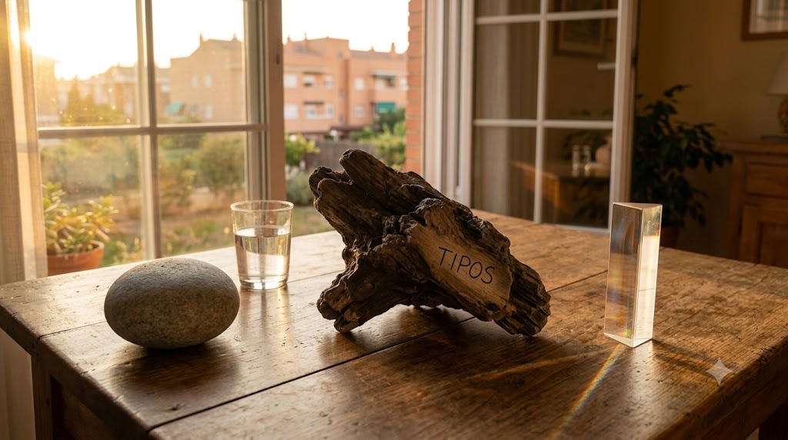

Lo que no cabe en una página fija: el día a día del trastorno bipolar, contado sin filtro y revisado con rigor. Esta sección crece con cada artículo nuevo.
Dos maneras de encontrar lo que buscas.
Elige uno o varios y pulsa Filtrar. Puedes combinar — por ejemplo, "Lo vivo yo" + "Acompaño a alguien".
Otra forma de llegar a lo mismo: entra directo por el tema que te interesa.
No son dos cajones: del tipo I a la ciclotimia, con zonas grises reconocidas. El mapa completo del trastorno.
Leer →Cuatro o más fases en un año. Qué la dispara (sueño, fármacos, tiroides) y cómo se frena.
Leer →Ni es 'leve' ni es un 'no lo sé': el borde del espectro, real y tratable.
Leer →El equilibrio, ni arriba ni abajo. Por qué al principio se confunde con estar apagado.
Leer →Suele debutar entre los 15 y los 25. Por qué se diagnostica tarde y qué señales mirar.
Leer →Mismo dolor, otras reglas: por qué el tratamiento no es un antidepresivo a secas.
Leer →Energía y angustia juntas: uno de los estados más duros y de mayor riesgo.
Leer →Rangos de la manía, la hipomanía y la depresión. Y el dato que da esperanza: tratada, dura menos.
Leer →El cambio de luz altera el sueño y dispara las fases. Cómo anticiparte a tu patrón.
Leer →Los primeros avisos, sutiles y personales. Detectarlos a tiempo lo cambia todo.
Leer →Delirios o alucinaciones en las fases extremas. No es 'locura': es un síntoma que se trata.
Leer →Qué se hereda de verdad y qué no, cuánto pesa la genética frente al ambiente y qué significa para tu familia.
Leer →
Grados (total, absoluta, gran invalidez) y por qué lo decisivo es documentar el impacto, no el diagnóstico.
Leer →Qué es el 33%, qué derechos abre y cómo se pide. Una herramienta que mucha gente no reclama por vergüenza o por lío.
Leer →
Temblor, sed, tiroides, riñón: cuáles son normales, cuáles vigilar y cómo llevarlos sin dramatizar.
Leer →Qué hace cada estabilizador y en qué se diferencian. La base del tratamiento del trastorno bipolar.
Leer →Qué medicación engorda y por qué, y qué se puede hacer para manejar el peso sin abandonar el tratamiento.
Leer →Ibuprofeno, diuréticos, alcohol: con qué no mezclar el litio y por qué puede volverse peligroso.
Leer →Cuánto dura la baja (IT) por trastorno bipolar, quién la paga y qué pasa a los 18 meses. Un derecho que puedes usar sin culpa.
Leer →Cuándo el despido por tu enfermedad es nulo, qué dice la Ley 15/2022 y la reforma de 2025. La ley está de tu lado.
Leer →Altibajos continuos y de baja intensidad durante años que se confunden con el carácter. Qué es y por qué conviene tratarla.
Leer →Hipomanía y depresiones intensas. Por qué se confunde con una depresión y por qué no es una versión ‘suave’.
Leer →Se define por al menos un episodio de manía. Qué es, cuándo llega a la psicosis y por qué necesita tratamiento.
Leer →La diferencia está en la altura del pico: manía frente a hipomanía. Qué cambia para el diagnóstico y el tratamiento.
Leer →Cómo funcionan la baja y la incapacidad si trabajas por tu cuenta: cotización, cuánto se cobra y la trampa de la cuota.
Leer →Ajustes razonables con trastorno bipolar: horarios, turnos, funciones. Qué obliga el Estatuto y qué refuerza la reforma de 2025.
Leer →Consentimiento, confidencialidad, tu historia clínica y la reforma que acabó con la incapacitación (Ley 8/2021).
Leer →
Cómo ayudar de verdad a un familiar con trastorno bipolar: acompañar el tratamiento, leer las señales, poner límites…
Leer →
La diferencia entre depresión y trastorno bipolar está en las fases altas. Por qué distinguirlas es clave para el…
Leer →
Trastorno bipolar y trastorno límite de la personalidad se confunden, pero no son lo mismo. En qué se diferencian y…
Leer →
Qué es un episodio maníaco, cómo reconocer sus señales, en qué se diferencia de la hipomanía y cuándo deja de ser…
Leer →
Personas conocidas que han hablado abiertamente de su trastorno bipolar. Por qué sus testimonios ayudan a romper el…
Leer →
Qué es la hipomanía, cuáles son sus síntomas, en qué se diferencia de la manía y por qué es la fase que más se…
Leer →Qué es el litio, por qué es uno de los tratamientos de referencia del trastorno bipolar, qué hace y por qué necesita…
Leer →
Los mitos más extendidos sobre el trastorno bipolar y la realidad detrás de cada uno. Desmontar el estigma empieza…
Leer →
Cómo es tener una pareja con trastorno bipolar: querer sin perderte, atravesar las fases juntos, poner límites sanos…
Leer →
Las frases que más dañan a una persona con trastorno bipolar, por qué hacen daño y qué decir en su lugar para…
Leer →
Testimonios reales de personas que viven con trastorno bipolar. Porque a veces, leer que alguien más lo ha contado…
Leer →
Si tienes pensamientos de hacerte daño, no estás solo y hay ayuda. Señales de alarma, cómo pedir ayuda y cómo…
Leer →Trabajar con trastorno bipolar es posible. Cómo conciliar empleo y enfermedad, cuándo contarlo, qué ajustes ayudan y…
Leer →Por qué puedes estar en fase alta y por fuera parecer normal: el enmascaramiento y por qué el bipolar II tarda años…
Leer →En fase alta el miedo se apaga: por que eso desarma a un agresor o a un perro, y por que el peligro no es que seas la presa, sino el freno roto…
Leer →En los extremos el animo miente. Como medirte por senales externas y cazar la bajada pronto, en la ventana donde aun…
Leer →Que hacer y que no cuando un familiar esta en crisis de mania y rechaza al medico. En el pico se baja la amenaza y…
Leer →Los hombres suelen empezar con mania y mas pronto; las mujeres, con depresion y mas tarde. Por que el sexo cambia el…
Leer →Los golpes de la vida no causan el trastorno bipolar pero disparan sus episodios. El papel del sueno y como…
Leer →Como se busca el equilibrio justo de la medicacion bipolar: un ajuste fino de meses, por senales objetivas, y por…
Leer →
Por que el familiar que entiende el trastorno bipolar ayuda mejor y se quema menos: fuentes fiables, lecturas…
Leer →Para un bipolar la palabra del medico pesa como pocas, y en fase alta lo amplifica todo: por que un halago mal…
Leer →Por que mentirle a tu psiquiatra te sale caro: la conciencia de enfermedad, por que se calla la verdad y como la…
Leer →Varios estabilizadores y antipsicoticos engordan. Por que el peso mina la autoestima, por que no se abandona a solas…
Leer →Convivir con una pareja bipolar desde dentro: que hacer en los altos y en los bajos y que hace falta para sostenerlo…
Leer →Por que el animo mueve la bascula: pierdes peso en la fase alta y engordas en la depresion. Que pasa en tu cuerpo y…
Leer →
En la euforia emites una sola senal amplificada y la polaridad la pone quien te recibe. Por que el mismo estado te…
Leer →Como funcionan la salud mental publica y privada en Espana y cuando compensa el salto. Exprime la publica; la…
Leer →El trastorno bipolar no se cura pero se doma: el control no es suerte, son palancas: edad, experiencia, buen medico,…
Leer →
Tras un episodio bipolar queda un poso: fatiga, la memoria de lo que hiciste arriba, la confianza por rehacer. Que…
Leer →Por que sigues intenso y energico aunque lleves meses estable. El temperamento hipertimico y como no confundirlo con…
Leer →El trastorno bipolar en el trabajo desde las dos sillas: derechos del empleado, cuando contarlo y como debe actuar…
Leer →El trastorno bipolar en cine y series: que acierta y que falsea cada retrato, de Urgencias a Homeland, y que ver…
Leer →Cada semana te escribimos un correo con un artículo nuevo sobre el trastorno bipolar, en lenguaje claro y revisado por un psiquiatra. Para quien lo vive y para quien acompaña.